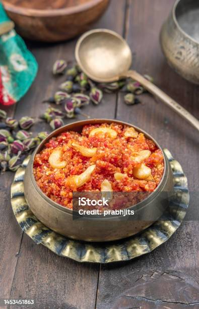

Home

Description
Gajar Ka Halwa is a rich, sweet carrot pudding and a traditional Indian dessert.
- Carrots
- Milk
- Almonds
- Pistachios
- Sugar
- Ghee
- Cardamom Powder
- Raisins
- Wash and peel Carrots
- Add ghee to heat the pan. Then add the nuts and raisins. Fry the nuts until they are lightly golden and the raisins are slightly plump.
- Add carrots and sautee for 3 min
- Add milk, cover and cook
- Add cardamom powder
- Add more ghee and keep cooking until milk has evaporated
- Serve with additional nuts as garnish!